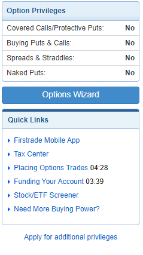
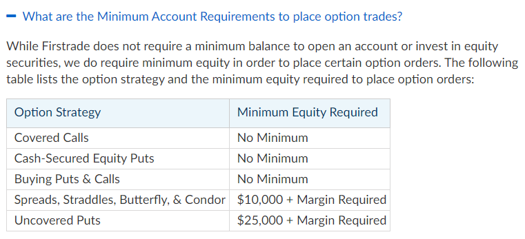
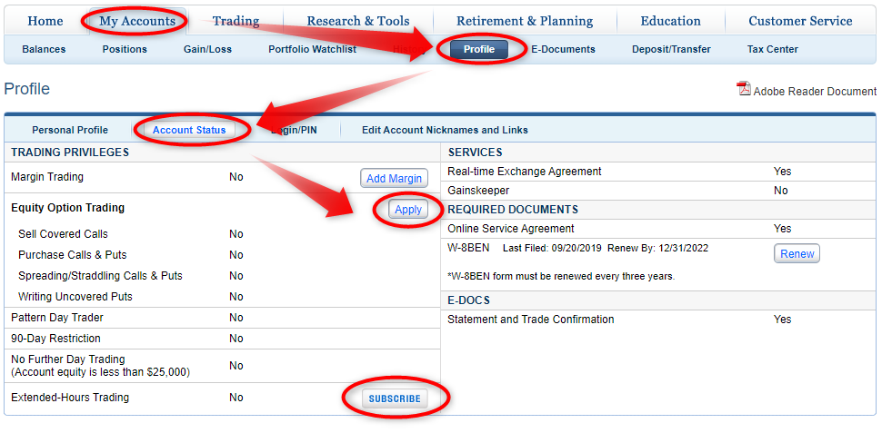
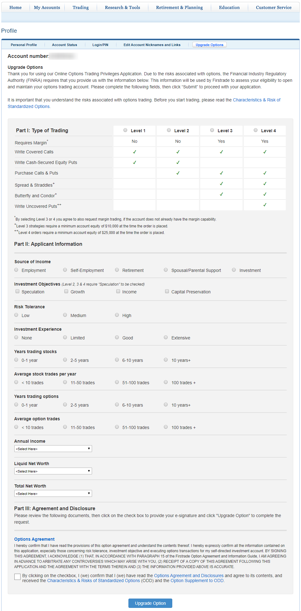
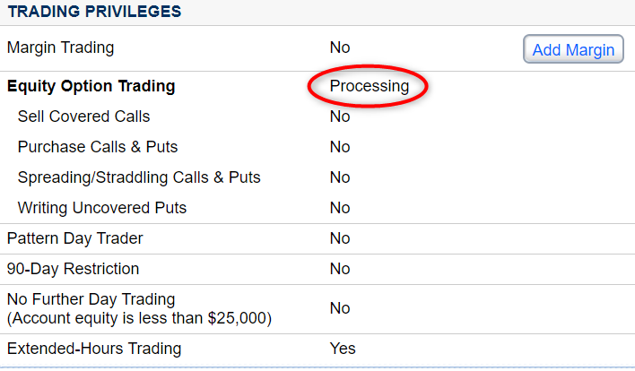

Firstradeでのオプション取引できるようにするには

Firstradeでの口座開設後、オプション取引できるようにするには。 結果としては書面は必要なかったのですが、WEB上での手続きが必要でした。

オプション取引の許可が下りない。
Firstradeに口座を開設して、1か月がたとうとしています。 ところが、Option取引のページの右側にある、Option Privileges（オプション取引の許可？）はすべて【No】のまま。。。。なぜなんでしょうと悩みました。

口座開設の時にオプション取引も申し込んだ記憶があるのに。。。
口座開設の際に、Additional Account Featuresの所で、Options TradingをYESにした覚えがあるけれど、それだけではだめなのか。
追加の手続きが必要なの？
下の方にApply for additional Privilegesというリンクがありますが、クリックすると、 option_application2017というオプション取引の同意書のPDFが出てきます。
これを提出するのか？申し込み時のOptions TradingをYESにしたあと、規約みたいなのが出てきて、同意したような気がするんだけど。。。
firstradeのウェブサイトをくまなく調べた
やはり追加の手続きが必要な感じの説明が見つかる
Stock Options Trading | Option Hedging Strategiesこのぺージの下部には
Apply for Options Trading Privileges The approval for options trading is not automatically granted to investors due to the complicated nature of the transactions, as well as the additional exposure to risks that options trading introduces to your account. Before you determine whether or not options trading is right for you, make sure to read our options education documents and complete our Options Application and Agreement.
オプション取引特権の申請 オプション取引の承認は、取引の複雑な性質、およびオプション取引があなたの口座にもたらすリスクへの追加的なエクスポージャーのため、投資家に自動的に付与されません。オプション取引がお客様に適しているかどうかを判断する前に、オプションの教育文書を読み、オプションの申し込みと契約を完了してください。
Options carry a high level of risk and are not suitable for all investors. Certain requirements must be met before participating in Firstrade's stock options trading. Please read the Options Disclosure Document titled Characteristics and Risks of Standardized Options before considering any option transaction.
オプションには高いリスクが伴い、すべての投資家に適しているわけではありません。 Firstradeのストックオプション取引に参加する前に、特定の要件を満たす必要があります。オプション取引を検討する前に、標準化オプションの特性とリスクというタイトルのオプション開示文書をお読みください。
のように書いてあるし、
Buying and Selling Options FAQs | Firstrade Securities Inc.そしてこのページには
How do I apply for options trading? In order to trade options, we require investors to submit an Option Application & Agreement. A completed application can be uploaded to Customer Service-Form Center-Upload Form; or emailed to service@firstrade.com.
オプション取引の申し込み方法は？ オプションを取引するために、投資家はオプション申請と契約書を提出する必要があります。完成したアプリケーションは、カスタマーサービス-フォームセンター-アップロードフォームにアップロードできます。またはservice@firstrade.comにメールで送信します。
オプション取引を行うための条件等も再確認
そしてその下
What are the Minimum Account Requirements to place option trades?
オプション取引を行うための最低口座要件は何ですか？
While Firstrade does not require a minimum balance to open an account or invest in equity securities, we do require minimum equity in order to place certain option orders. The following table lists the option strategy and the minimum equity required to place option orders
Firstradeは口座開設や株式への投資に最低残高を必要としませんが、特定のオプション注文を出すためには最低資本を必要とします。次の表に、オプション戦略と、オプション注文を出すために必要な最小資本を示します。

プットとコールの買い、カバードコールとキャッシュセキュアドプットに関しては、要件はとくにないみたいですね。
その他このページには、Firstradeではネイキッドのコール売りはできないとか手数料は0円だよとか、権利行使のリクエストはメールで送ってね、とか詳しい説明があるので、すべて目を通してみました。 英語はGoogle翻訳で十分わかる。
為になる無料のpodcastもあるようだ
さらにこちらのOptions Guideのページには、注文の仕方の動画や、セミナーもpodcastで配信していた（英語）。あとで聞いてみよう。＞ Options Trading Podcast | Options Basics for Beginners
アカウントステータスの中にありました。
とにかく！まず最初に書類をおくるのね？ と思ったら
あった！申請フォーム。 My Accounts > Profile > Account Status 
情報が散発的でわかりにくい
これってどこに説明書いてあるのかな。。。。
というか自分のプロフィールページなんだから最初に確認しない私が悪いですよね💦
ここにはMargin Tradingの申請ボタンもありますね
Extended-Hours Tradingの申請ボタンとW-8BENの更新ボタンも。
最初にここ見るべきでした💦
Extended-Hours Trading（時間外取引？）は簡単に追加できた
Extended-Hours Tradingのところはボタンを押して出てきた文書を読んで同意ボタンを押せば、即座にYesとなりました。
オプションに関しては追加の申請フォームの様な物が必要でした。
Equity Option Tradingの所はボタンをおしたら下記のようなフォームが出てきますので、入力して送信します。
内容は、確か口座開設時に似たようなフォームを送ったような気がしますが。。。。

私はLEVEL2までをチェックして、その他必要事項を記入
投資経験などは盛らなくても大丈夫だと思う(笑)
Investiment Experienceに関しては2年目なので、Limitedとしました。 Option Tradingの経験は初めてなので0-1yearとしました。
許可が下りないと困るから少し盛った方がいいみたいな話をネットで見かけたことありますが、正直に初心者丸出しの回答になりました。
完了すると、【Processing】となって、審査中だなとわかります。 
許可が下りました。
その後、確か2-3日で、Option PrivilegesのCoverd Call/Protective Putsと Buying Puts & CallがYesとなりました。

メールでのお知らせもきちんと来ました。